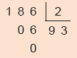
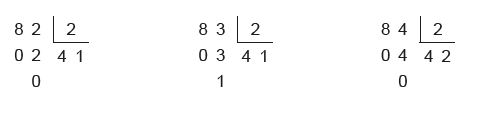

UNIDADE 4 - Divisibilidade

Westerpark. Amsterdã, Holanda, 2020.
132

Praticar esportes é muito importante para a saúde. A corrida, por exemplo, é um exercício aeróbico que ajuda a controlar o peso. Ela ajuda na queima de calorias e aumenta a taxa metabólica. O controle do peso desempenha um papel fundamental na prevenção do diabetes tipo 2, doença na qual os açúcares dos alimentos não são adequadamente metabolizados. Essa doença vem aumentando em todo o mundo, principalmente em países sob rápida industrialização.
Lucas e Joaquim, preocupados com a saúde, correm várias voltas em um parque perto de suas casas três vezes por semana. Lucas é mais rápido que Joaquim e dá uma volta na pista em 15 minutos, ao passo que Joaquim leva 20 minutos para percorrer a mesma distância.
CONVERSE
1. Se os dois começarem a correr no mesmo instante, saindo do ponto de partida, depois de quanto tempo eles passarão juntos pelo ponto inicial da pista?
2. Como vocês resolveram a questão anterior?
133
CAPÍTULO 1 - Divisores e múltiplos
Divisores de um número natural
Luciana resolveu comemorar seu aniversário com os colegas da escola. Para esse lanche, sua mãe vai levar, além de um bolo, 150 brigadeiros, 60 coxinhas e 60 pasteizinhos. Participarão do lanche: Luciana, sua mãe, a professora e os 22 colegas da classe.


1. Troque ideias com seus colegas e professor e calcule, em seu caderno, quantos salgadinhos de cada tipo e quantos docinhos cada um dos presentes receberá se forem divididos em quantidades iguais. Sobrarão docinhos ou salgadinhos?
Dizemos que um número natural é divisível por outro quando sua divisão é exata. Observe:
Nesse caso, temos que 186 é divisível por 2, ou ainda, que 2 é divisor de 186.
Podemos encontrar outros divisores do número 186, veja:
1, 2, 3, 6, 31, 62, 93, 186

2. Observe os números a seguir.
230 345 447 234 372 440 500 684
a) Com o auxílio de uma calculadora e a ajuda de seus colegas,
verifiquem quais dos números acima são divisíveis por:
2 3 4 5 6 8 9 10
b) O que os números que são divisíveis por 2 têm em comum?
c) O que os números que são divisíveis por 5 têm em comum?
d) O que os números que são divisíveis por 6 têm em comum?
134
UNIDADE 4 - CAPÍTULO 1
Critérios de divisibilidade

Divisibilidade por 2
Observe as divisões a seguir.
Os números 82 e 84 são divisíveis por 2, pois as divisões são exatas. Já em relação ao número 83, a divisão por 2 não é exata.
Um número natural é divisível por 2 quando ele é par, ou seja, quando termina em 0, 2, 4, 6 ou 8.
Divisibilidade por 3
Observe as divisões a seguir.
9 3 3
1 2 0 3
2 6 1 3
5 4 2 3
0 3 3 1
0 0 4 0
2 1 8 7
2 4
1 8 0
0
0
0 2
Os números 93, 120 e 261 são divisíveis por 3.
93 → 9 + 3 = 12
Há um critério para saber se um
número é divisível por 3. Para isso,
vamos adicionar os algarismos que
120 → 1 + 2 + 0 = 3
formam cada um dos números.
261 → 2 + 6 + 1 = 9
Reinaldo Rosa/Acervo da Editora
Observe que, nos três casos em que o resto é zero, a soma dos algarismos de cada número é um número divisível por 3. Esses três exemplos verificam o seguinte critério:
Um número natural é divisível por 3 quando a soma de seus algarismos dá um número divisível por 3.
UNIDADE 4 - CAPÍTULO 1
UNIDADE 4 - CAPÍTULO 1
135

Divisibilidade por 4
Observe as divisões a seguir.
3 0 0 4
1 7 0 0
4
2 9 0 0
4
1 0
4 2 5
1 0
7 2 5
2 0 7 5
2 0
2 0
0
0
0
5 3 2
4
1 7 2 8
4
6 9 3 6
4
1 3
1 3 3
1 2
4 3 2
2 9
1 7 3 4
1 2
0 8
1 3
0
0
1 60
Todos os números acima são divisíveis por 4.
Um número natural é divisível por 4 quando termina em 00 ou quando os dois últimos algarismos, da direita para a esquerda, formam um número divisível por 4.
Divisibilidade por 5
Observe as divisões a seguir.
3 0 5 5
2 1 0 5
2 1 5 5
1 0 4 2
1 5 4 3
0 5 6 1
0
0
0
2 6 8 0
5
1 5 6 0
5
3 6 5 0
5
1 8
5 3 6
0 6
3 1 2
1 5
7 3 0
3 0
1 0
0 0
0
0
Todos os números acima são divisíveis por 5. Observe que todos terminam em 0 ou 5.
Um número natural é divisível por 5 quando termina em 0 ou 5.
136
UNIDADE 4 - CAPÍTULO 1

Divisibilidade por 6
Observe os números abaixo.
756 1 044 5 874
Esses números são divisíveis por 2 e por 3.
A seguir, temos as divisões desses números por 6.
5 8 7 4
6
7 5 6
6
1 0 4 4
6
4 7
9 7 9
1 5
1 2 6
4 4
1 7 4
5 4
3 6
2 4
0
0
0
Todos os números também são divisíveis por 6.
Um número natural é divisível por 6 quando é divisível por 2 e 3 ao mesmo tempo.
Divisibilidade por 8
Observe as divisões a seguir.
3 0 0 0
8
1 7 0 0 0
8
3 4 0 0 0
8
6 0
3 7 5
1 0
2 1 2 5
2 0
4 2 5 0
4 0
2 0
4 0
0
4 0
0 0
0
0
1 3 6 8
8
2 1 3 6
8
6 5 4 4
8
5 6
1 7 1
5 3
2 6 7
1 4
8 1 8
0 8
5 6
6 4
0
0
0
Todos os números acima são divisíveis por 8. Note que os três últimos algarismos, da direita para a esquerda, de cada número terminam em 000 ou formam números divisíveis por 8.
Um número natural é divisível por 8 quando termina em 000 ou quando os três últimos algarismos, da direita para a esquerda, formam um número divisível por 8.
UNIDADE 4 - CAPÍTULO 1
UNIDADE 4 - CAPÍTULO 1
137


Divisibilidade por 9
Observe as divisões a seguir.
9 9 9
4 6 8 9
8 9 7 3
9
0 9 1 1
1 8 5 2
8 7
9 9 7
0
0
6 30
Os números 99, 468 e 8 973 são divisíveis por 9.
Agora, vamos verificar outra
formafide saber se os números
são divisíveis por 9. Para isso,
vamos adicionar os algarismos
que formam cada um dos
números.
Reinaldo Rosa/Acervo da Editora
99 → 9 + 9 = 18
468 → 4 + 6 + 8 = 18
8 973 → 8 + 9 + 7 + 3 = 27
Observe que, nos três casos, a soma dos algarismos de cada número é um número divisível por 9.
Um número natural é divisível por 9 quando a soma de seus algarismos é um número divisível por 9.
138
UNIDADE 4 - CAPÍTULO 1


Divisibilidade por 10
Observe as divisões a seguir.
3 0 0
10
2 1 0
10
2 2 0
10
0 0 3 0
1 0 2 1
2 0 2 2
0
0
0
2 6 8 0
10
1 5 6 0
10
3 6 5 0
10
6 8
2 6 8
5 6
1 5 6
6 5
3 6 5
8 0
6 0
5 0
0
0
0
Todos os números acima são divisíveis por 10.
Um número natural é divisível por 10 quando termina em 0.
Divisibilidade por 100 e por 1 000
1. Elabore, em seu caderno, um critério de divisibilidade por 100 e outro critério para a divisibilidade por 1 000.
ENCONTRE SOLUÇÕES
1. Em seu caderno, escreva cinco diviso-3. Qual é o maior número de dois algaris-res de cada um dos números abaixo.
mos que é divisível por:
a) 45
c) 64
a) 2?
b) 36
d) 56
b) 3?
c) 5?
2. Observe os números a seguir.
d) 6?
663
745
1 214
1 850
2 502
4. Responda às questões a seguir, justifi-a) Quais desses números são divisí-
cando a resposta dada.
veis por 2?
a) O número 3 789 é divisível por 2?
b) Quais são divisíveis por 3?
b) O número 1 632 é divisível por 3?
c) Quais são divisíveis por 5?
c) O número 1 500 é divisível por 4?
d) Existe algum número divisível por d) O número 62 048 é divisível por 8?
6? Qual?
UNIDADE 4 - CAPÍTULO 1
UNIDADE 4 - CAPÍTULO 1
139


5. No caderno, escreva a sequência dos 10. Os Jogos Olímpicos de Londres foram divisores dos seguintes números:
realizados no ano de 2012, reunindo
a) 20
c) 63
191 países e 13 territórios participantes.
b) 27
d) 80
a) Esse ano foi bissexto?
► Qual o maior divisor comum entre
b) De quantos em quantos anos são
27 e 63?
realizados os Jogos Olímpicos?
► Qual o maior divisor comum entre
c) Podemos dizer que os Jogos Olím-
20 e 80?
picos vêm coincidindo com os anos
bissextos?
6. O número da casa de Carlos é forma-do por três algarismos iguais e é divisí-11. Uma forma prática de mostrar se um vel, ao mesmo tempo, por 6 e 8. Qual
número é divisível por outro é por meio é o número da casa dele?
de um fluxograma. Um fluxograma
é um esquema que representa o ca-
7. Que algarismos podem ser colocados minho necessário para chegar a uma
no lugar de X, para que esse número
conclusão. Observe o fluxograma a seja divisível por 6?
seguir que nos mostra se um número
é par ou não.
1
8
X
4
Número
8. Qual é o menor número de quatro algarismos divisível por:
Divida o
número por 2
a) 2?
d) 6?
b) 3?
e) 8?
c) 5?
f) 9?
Sim O resto da divisão Não
é igual a zero?
9. Um ano é bissexto quando o número O número é
O número não
que o representa é divisível por 4. No par.
é par.
caso dos anos que terminam em 00,
► Com um colega, escolham um nú-
só se eles também forem divisíveis por mero natural e, em seus cadernos,
400. O ano de 2020 foi bissexto. Nesse usando o fluxograma, verifiquem
caso, o mês de fevereiro teve 29 dias, se o número é ou não par.
como mostra o calendário a seguir.
12. Observe o fluxograma a seguir.
928
Fevereiro
2020
S
T
Q
Q
S
S
D
1
2
Sim
O número
Não
natural termina em
3
4
5
6
7
8
9
0 ou 5?
10
11
12
13
14
15
16
O número é
O número não é
divisível por 5.
divisível por 5.
17
18
19
20
21
22
23
24
25
26
27
28
29
► Esse fluxograma representa qual
critério de divisibilidade?
► Verifique se os anos abaixo foram bissextos.
13. Em seu caderno, elabore um fluxogra-a) 1600
c) 1800
ma que represente quando um número
b) 1732
d) 2004
natural é ou não divisível por 3.
140
UNIDADE 4 - CAPÍTULO 1


Múltiplos de um número natural
Marcelo vai iniciar uma pesquisa para um trabalho da escola. Ele deverá plantar uma flor e acompanhar seu crescimen-to. Para isso, deverá medi-la de 4 em 4 dias, até o 40.º dia, e anotar em um quadro a altura da planta no momento de cada Reinaldo Rosa/Acervo da Editora
medição.
Observe o quadro que ele construiu.
Dias
4.o
8.o
12.o
16.o
20.o
24.o
28.o
32.o
36.o
40.o
Altura
MODELOMODELO MODELO
Os números dessa sequência representam os dias de medição e são múltiplos de 4.
Observe a sequência de alguns números naturais que são múltiplos de 4: 0, 4, 8, 12, 16, 20, 24, 28, 32, 36, 40, 44, 48, 52, ...
Para determinar os múltiplos de um número natural, multiplicamos-o pela sucessão dos números naturais.
A sequência dos múltiplos de um número natural é infinita.
Exemplos:
► 35 é múltiplo de 5 ou 35 é divisível por 5.
► 70 é múltiplo de 7 ou 70 é divisível por 7.
ENCONTRE SOLUÇÕES
1. Qual a sequência dos sete primeiros 2. Em seu caderno, escreva:
múltiplos de cada um dos números a
a) o maior múltiplo de 5 formado por seguir?
três algarismos;
a) 2
b) o menor múltiplo de 4 formado por b) 6
três algarismos;
c) 3
c) o menor múltiplo de 6 entre 200 e d) 10
300;
e) 5
d) o maior múltiplo de 9 entre 500 e f) 12
600.
UNIDADE 4 - CAPÍTULO 1
UNIDADE 4 - CAPÍTULO 1
141


3. Qual o menor múltiplo comum, diferen-Um par de números é chamado de
te de 0 (zero), entre:
números amigos se cada um deles é igual a) 12 e 18?
à soma dos divisores próprios do outro. Os divisores próprios de um número natural b) 10 e 15?
maior que 0 (zero) são todos os divisores c) 11 e 44?
naturais desse números, exceto o próprio, por exemplo: 1 184 e 1 210 são amigos, 4. Para realizar um trabalho, a professora pois os divisores próprios de 1 184 são 1, de História dividiu a turma, que tem 36
2, 4, 8, 16, 32, 37, 74, 148, 296 e 592, cuja alunos, em três grupos, de acordo com soma é igual a 1 210, e os divisores pró-os seguintes critérios:
prios de 1 210 são 1, 2, 5, 10, 11, 22, 55,
► o grupo A foi formado pelos núme-
110, 121, 242 e 605, cuja soma é 1 184.
ros pares da lista de chamada, po-
São chamados perfeitos os números
rém que não fossem múltiplos de 3;
cuja soma de seus divisores próprios é igual a eles. Por exemplo, a soma dos divisores
► o grupo B foi formado pelos núme-
próprios de 6 (1, 2 e 3) é ele mesmo.
ros múltiplos de 3;
► o grupo C foi formado pelos demais
a) Com o auxílio de uma calcu-
números da lista de chamada.
ladora, verifiquem se os pa-
res de números a seguir são
a) Que números da lista de cha-
amigos.
mada ficaram em cada grupo?
124 e 146
220 e 284
b) Com quantos alunos cada gru-
po ficou?
b) Agora, verifiquem se os números a 5. Leia o texto a seguir.
seguir são perfeitos.
Por volta de 540 a.C., o filó-
36
28
sofo grego Pitágoras fundou, na ci-
dade de Crotona, localizada ao sul
da península italiana, uma escola
voltada ao estudo da Filosofia, das Ciên-cias Naturais e da Matemática. Muitos de seus discípulos se reuniram nessa escola, Almodóvar / Flickr
que acabou se tornando uma sociedade
Javier
secreta.
Os pitagóricos, como eram chama-
dos, espalharam pelo antigo mundo grego o interesse pelo estudo da Matemática.
É atribuído a eles o início do desenvolvi-mento da Teoria dos Números. Eles des-cobriram os chamados números amigos e números perfeitos.
Pitágoras. Século II a.C.,
Museo Capitolino, Roma.
142
UNIDADE 4 - CAPÍTULO 1


6. Vamos descobrir múltiplos? Construa, em seu caderno, um quadro com os números de 0 a 99, como mostra o modelo.
0
1
2
3
4
5
6
7
8
9
10
11
12
13
14
15
16
17
18
19
MODELO
20
21
22
23
24
25
26
27
28
29
30
31
32
33
34
35
36
37
38
39
MODELO
40
41
42
43
44
45
46
47
48
49
50
51
52
53
54
55
56
57
58
59
60
61
62
63
64
65
66
67
68
69
MODELO
70
71
72
73
74
75
76
77
78
79
80
81
82
83
84
85
86
87
88
89
MODELO
90
91
92
93
94
95
96
97
98
99
► Convide um colega para jogar, obedecendo às regras descritas a seguir.
1. Cada jogador deverá escolher uma cor de lápis para pintar os números e múltiplos que encontrar.
2. O jogador que iniciar o jogo deverá selecionar um número do quadro, pintando-o com a cor que escolheu.
3. O outro jogador deverá encontrar a maior quantidade possível de múltiplos do número selecionado, pintando-os com a cor que escolheu.
4. Quando o jogador terminar de pintar, deverá então escolher um número para que o outro jogador encontre os múltiplos.
5. O jogo terminará quando todos os números forem pintados, lembran-do que um número só pode ser pintado uma vez, mesmo que seja múltiplo de outro número também.
6. Caso um jogador pinte um número que não seja múltiplo, este deverá ser assinalado, para que, no final, não seja considerado na pontuação.
7. Vencerá o jogo quem tiver mais números pintados.
UNIDADE 4 - CAPÍTULO 1
Reinaldo Rosa/Acervo da Editora
UNIDADE 4 - CAPÍTULO 1
143


CAPÍTULO
2
Números primos e números
compostos
Conceito de números primos
Observe a sequência dos divisores dos números a seguir.
6: 1, 2, 3, 6
11: 1, 11
16: 1, 2, 4, 8, 16
23: 1, 23
Você percebeu que os números 11 e 23 apresentam somente dois divisores, o número 1 e o próprio número? Nesse caso, eles são denominados de números primos.
Número primo é todo número natural que apresenta apenas dois divisores: o 1 e ele mesmo.
Os números que não são primos, ou seja, aqueles maiores do que 1 e que têm mais de dois divisores, são denominados números compostos.
1. Vamos descobrir quais são os números primos menores que 100? Para isso, podemos utilizar o processo denominado Crivo de Eratóstenes, de-senvolvido pelo matemático grego Eratóstenes há mais de 2 000 anos.
Primeiro, em dupla, construam no caderno, um quadro com todos os números naturais de 2 até 100, como no modelo a seguir.
2
3
4
5
6
7
8
9
10
11
12
13
14
15
16
17
18
19
20
MODELO
21
22
23
24
25
26
27
28
29
30
31
32
33
34
35
36
37
38
39
40
MODELO
41
42
43
44
45
46
47
48
49
50
51
52
53
54
55
56
57
58
59
60
61
62
63
64
65
66
67
68
69
70
MODELO
71
72
73
74
75
76
77
78
79
80
81
82
83
84
85
86
87
88
89
90
MODELO
91
92
93
94
95
96
97
98
99
100
144
UNIDADE 4 - CAPÍTULO 2


Em seguida, risquem os números que são:
► múltiplos de 2, exceto o próprio 2;
► múltiplos de 3, exceto o próprio 3;
► múltiplos de 5, exceto o próprio 5;
► múltiplos de 7, exceto o próprio 7.
► continuamos esse processo para os números que não foram riscados, até que não haja mais números a serem riscados ou contornados.
a) Que números vocês não riscaram?
Verifique junto com seus colegas e com o professor os números que foram riscados e os números que não foram riscados.
Os números que você encontrou são os números primos menores que 100.
Atenção!
► O número 1 não é primo nem composto, pois tem apenas um divisor, o próprio 1.
► O número 2 é o único número primo par.
ENCONTRE SOLUÇÕES
1. Classifique os números naturais a se-4. Podemos escrever alguns números
guir em primos ou compostos.
naturais considerando-os como um
a) 21
c) 41
e) 39
produto de números primos. Observe:
b) 23
d) 63
f) 89
6 = 2 ∙ 3
2. Quais são os números primos com-
► Em seu caderno, escreva cada
preendidos entre 50 e 60?
número a seguir, considerando-o
como um produto de dois ou mais
3. Responda à questão no caderno:
números primos.
a) 15
c) 30
b) 21
d) 42
5. Faça o Crivo de Eratóstenes, em seu caderno, utilizando números de 101 a
149. Depois, encontre os números pri-
mos compreendidos entre 100 e 150.
Risque os números que são:
Reinaldo Rosa/Acervo da Editora
a) múltiplos de 2; d) múltiplos de 7; b) múltiplos de 3; e) múltiplos de 11.
c) múltiplos de 5;
UNIDADE 4 - CAPÍTULO 2
UNIDADE 4 - CAPÍTULO 2
145


Decomposição em fatores primos
Vamos escrever o número 24 considerando-o como o produto de dois ou mais fatores, ou seja, a multiplicação de dois ou mais números naturais.
24 = 2 ∙ 12
24 = 4 ∙ 6
24 = 3 ∙ 8
24 = 2 ∙ 2 ∙ 6
24 = 2 ∙ 2 ∙ 2 ∙ 3
Comparando todos os produtos, podemos observar que, em um deles, todos os fatores são números primos.
24 = 2 ∙ 2 ∙ 2 ∙ 3
Nesse caso, temos a decomposição do número 24 em fatores primos.
Neste produto, dizemos que 2 e 3 são fatores de 24.
Todo número natural, desde que seja maior que 1 e não seja um número primo, pode ser decomposto em fatores primos. Chamamos esse processo de fatoração completa.
Exemplos:
Vamos obter a
► 32 = 2 ∙ 2 ∙ 2 ∙ 2 ∙ 2 = 25
► 51 = 3 ∙ 17
forma fatorada do
► 42 = 2 ∙ 3 ∙ 7
número 30?
► 72 = 2 ∙ 2 ∙ 2 ∙ 3 ∙ 3 = 23 ∙ 32
A forma fatorada completa de um número natural pode ser obtida por meio de um processo de divisões sucessivas.
Primeiro, verificamos se o número 30 é divisível pelo menor número primo. Como 30 é divisível por 2, efetuamos a divisão, prestando atenção na posição do 2 e na do 15.
30 2
15
Na sequência, verificamos se 15 ainda é divisível por 2.
Nesse caso, como não é, verificamos se ele é divisível pelo próximo número primo, que é 3, e continuamos a divisão.
30 2
15 3
Reinaldo Rosa/Acervo da Editora
5
146
UNIDADE 4 - CAPÍTULO 2


Temos que 5 é divisível por 5. Portanto: 30 2
15 3
5 5
1
Quando o quociente obtido é igual a 1, finalizamos o processo.
Forma fatorada completa: 30 = 2 ∙ 3 ∙ 5
Exemplos:
49 7
7 7
Forma fatorada completa: 7 ∙ 7 = 72.
1
144 2
72 2
36 2
18 2
Forma fatorada completa: 2 ∙ 2 ∙ 2 ∙ 2 ∙ 3 ∙ 3 = 24 ∙ 32.
9 3
3 3
1
ENCONTRE SOLUÇÕES
1. A seguir, temos a fatoração comple-2. Decomponha os números a seguir em ta de alguns números naturais. Quais
fatores primos e registre a forma fato-são esses números?
rada completa de cada um deles.
a) 23 ∙ 3 ∙ 5
d) 2 ∙ 5 ∙ 11
a) 68
e) 51
b) 22 ∙ 3 ∙ 7
e) 3 ∙ 52
b) 75
f) 90
c) 32 ∙ 5
f) 22 ∙ 32 ∙ 7
c) 84
g) 104
d) 350
h) 175
UNIDADE 4 - CAPÍTULO 2
UNIDADE 4 - CAPÍTULO 2
147


3. Por meio da decomposição em fatores 5. Paula e Elaine estão competindo para primos, podemos também calcular a
ver quem resolve mais rapidamente as
raiz quadrada de um número quadrado
atividades propostas pelo professor.
perfeito. Observe:
Em uma atividade, a forma fatorada de um número natural era 23 ∙ 32. Qual das 100 = ?
duas acertou?
100 2
50 2
Eu encontrei o
25 5
100 = 2 ∙ 2 ∙ 5 ∙ 5
número 54.
5 5
1
Aplicando a propriedade comutativa, te-Eu encontrei
Reinaldo Rosa/Acervo da Editora
mos:
72
100 = 2 ∙ 5 ∙ 2 ∙ 5
Em seguida, aplicamos a propriedade
associativa:
100 = (2 ∙ 5) ∙ (2 ∙ 5)
Ou seja:
100 = 10 ∙ 10 = 102
Portanto, 100 = 10.
► Agora é a sua vez! Utilizando a
decomposição em fatores primos,
calcule o valor da raiz quadrada
6. Observe os números a seguir, decom-dos números quadrados perfeitos
postos em fatores primos.
abaixo.
A = 2 ∙ 2 ∙ 3 ∙ 3 ∙ 5
a) 196
c) 625
B = 2 ∙ 3 ∙ 5 ∙ 7
b) 900
d) 1764
a) O número A é múltiplo de 9? Por
4. Alguns números são apresentados
quê?
com sua forma fatorada completa. Que
b) O número B é múltiplo de 21? Por
fator deve ser colocado no lugar do
quê?
símbolo ■, para que a igualdade seja
c) Escreva o número A e B.
verdadeira?
d) O produto A ∙ B é múltiplo de 8? Por a) 22 ∙ ■ ∙ 7 = 140
quê?
b) 3 ∙ 5 ∙ ■ = 165
e) Qual o resultado da divisão do nú-c)
■ ∙ 7 ∙ 13 = 819
mero A por 45?
d)
■ ∙ 5 ∙ 17 = 340
f) Qual o resultado da divisão do número B por 6?
148
UNIDADE 4 - CAPÍTULO 2


CAPÍTULO
3
Máximo divisor comum (mdc)
A professora de música do 6.º ano reuniu todos os alunos para ensaiar um recital em homenagem aos pais. Ao todo, são 114 meninas e 95 meninos, que ficarão divididos em grupos. A professora quer formar grupos de meninas e grupos de meninos.
1. Troque ideias com um colega e expliquem como a professora pode saber quantos alunos ficarão em cada grupo, sabendo que cada grupo deverá ter o mesmo número de alunos e que esse número deverá ser o maior possível.
Quantos alunos
cada grupo
terá?
Observe a seguir os divisores dos números 114 e 95.
Divisores de 114: 1, 2, 3, 6, 19, 38, 57, 114.
Reinaldo Rosa/Acervo da Editora
Divisores de 95: 1, 5, 19, 95.
Os divisores comuns entre 114 e 95 são 1 e 19. Como o número procura-do deve ser o maior divisor possível entre os dois, temos que o máximo divisor comum entre 114 e 95 é 19, e o representamos da seguinte forma: mdc (114, 95) = 19
Portanto, a professora poderá formar 6 grupos com 19 meninas e 5 grupos com 19 meninos.
UNIDADE 4 - CAPÍTULO 2
UNIDADE 4 - CAPÍTULO 3
149


Exemplos:
► mdc (20, 30) = ?
Também podemos
calcular o mdc por
Divisores de 20: 1, 2, 4, 5, 10, 20
meio da decomposição
Divisores de 30: 1, 2, 3, 5, 6, 10, 15, 30
em fatores primos.
Divisores comuns: 1, 2, 5, 10
mdc (20, 30) = 10
► mdc (18, 36, 54) = ?
Divisores de 18: 1, 2, 3, 6, 9, 18
Divisores de 36: 1, 2, 3, 4, 6, 9, 12, 18, 36
Divisores de 54: 1, 2, 3, 6, 9, 18, 27, 54
Divisores comuns: 1, 2, 3, 6, 9, 18
mdc (18, 36, 54) = 18
Reinaldo Rosa/Acervo da Editora
► mdc (20, 30) = ?
20 2
fator comum
30 2
fator comum
10 2
15 3
5 5
fator comum
5 5
fator comum
1
1
mdc (20, 30) = 2 ∙ 5 = 10
► mdc (18, 36, 54) = ?
18 2
fator comum
36 2
fator comum
9 3
fator comum
18 2
3 3
fator comum
9 3
fator comum
1
3 3
fator comum
1
54 2
fator comum
27 3
fator comum
9 3
fator comum
3 3
1
mdc (18, 36, 54) = 2 ∙ 3 ∙ 3 = 18
150
UNIDADE 4 - CAPÍTULO 3


ENCONTRE SOLUÇÕES
1. Pretende-se cortar os três barbantes 4. Carlos é músico e está reorganizan-representados a seguir em pedaços
do os discos de vinil de sua coleção.
que tenham o mesmo tamanho, de
Ele possui 175 discos lançados antes
modo que cada um tenha o maior com-
de 1970, 210 discos lançados entre
primento possível.
1970 e 1990 e 280 discos lançados
depois de 1990. Ele pretende colocar
a mesma quantidade de discos, sendo
a maior possível, em prateleiras separando-os de acordo com o período de
lançamento. Quantas prateleiras serão necessárias?
5. Nicolas possui um terreno com 42 m de frente por 56 m de fundo. Ele pretende plantar árvores ao redor do terreno de tal Reinaldo Rosa/Acervo da Editora
forma que as distâncias entre elas sejam a) Quanto medirá cada pedaço?
iguais e a maior possível. Qual será a b) Quantos pedaços serão ao todo?
distância entre as árvores plantadas?
2. Aplicando a técnica da decomposição 6. Leia as afirmações a seguir e diga se em fatores primos, calcule o mdc dos
são verdadeiras ou falsas.
números a seguir.
a) Os números 35 e 24 são números
a) 42 e 60
e) 210 e 234
primos entre si.
b) 78 e 96
f) 16, 30 e 40
b) O maior divisor comum entre 30 e
c) 35 e 45
g) 48, 60 e 130
um número natural x pode ser 60.
d) 120 e 160
h) 15, 55 e 75
c) Os números 11 e 121 são números
3. Calcule e responda em seu caderno: primos entre si.
a) mdc (4, 9)
d) O maior divisor comum entre 24 e
um número natural y pode ser 12.
b) mdc (5, 12)
c) mdc (13, 19)
7. Observe a quantidade de alunos
d) mdc (11, 18)
que há em sua turma. Elabore
um problema envolvendo o con-
► O que você observou de semelhan-
ceito de máximo divisor comum
te entre os máximos divisores co-
para uma situação que você irá
muns que calculou?
criar. Em seguida, troque seu caderno com um colega para que ele resolva o
Quando o mdc de dois números é
problema elaborado por você. Juntos,
igual a 1, dizemos que eles são primos verifiquem se os problemas resolvidos entre si.
estão corretos.
UNIDADE 4 - CAPÍTULO 3
UNIDADE 4 - CAPÍTULO 3
151


CAPÍTULO
4
Mínimo múltiplo comum (mmc)
Reinaldo Rosa/Acervo da Editora
Mariana está tomando três medicamentos que seu médico receitou. O primeiro deve ser tomado de 4 em 4 horas, o segundo de 6 em 6 horas e o terceiro de 12 em 12 horas. Ela iniciou o tratamento numa segunda-feira, tomando os três remédios às 8 horas da manhã.
1. Troque ideias com um colega e expliquem como Mariana poderá saber em qual horário ela irá tomar os três medicamentos juntos, novamente.
Agora veja como podemos descobrir esse horário.
Inicialmente precisamos encontrar os múltiplos de 4, 6 e 12.
Múltiplos de 4: 0, 4, 8, 12, 16, 20, 24, ...
Múltiplos de 6: 0, 6, 12, 18, 24, 30, ...
Múltiplos de 12: 0, 12, 24, 36, 48, ...
Note que os múltiplos comuns até 30 de 4, 6 e 12 são 0, 12 e 24. Destes, o menor múltiplo comum, diferente de 0 (zero), é 12. Ele é chamado de mínimo múltiplo comum e é representado da seguinte forma: mmc (4, 6, 12) = 12
Portanto, Mariana deverá tomar os três medicamentos juntos somente depois de 12 horas, ou seja, às 20 horas.
Podemos calcular o mmc entre dois ou mais números naturais por meio da decomposição simultânea em fatores primos. Observe: 4, 6, 12 2
2 3 6 2
1 3 3 3
1 1 1
mmc (4, 6, 12) = 2 ∙ 2 ∙ 3 = 22 ∙ 3 = 12
152
UNIDADE 4 - CAPÍTULO 4


ENCONTRE SOLUÇÕES
1. Dois ônibus de empresas diferentes 5. Um atleta dá uma volta em um parque partem da mesma rodoviária com desem 45 minutos. Outro corredor leva 60
tino à mesma cidade. Um deles tem
minutos para percorrer o mesmo per-
saídas de 2 em 2 horas e o outro, de 3
curso. Se os dois iniciarem a corrida em 3 horas. O primeiro horário de saí-juntos, após quanto tempo vão se en-
da desses ônibus é às 6 horas da ma-
contrar novamente?
nhã. Depois de quantas horas os dois
ônibus sairão no mesmo horário? Que
6. Calcule mentalmente:
horas serão?
a) mmc (3, 7)
2. Três funcionários de uma empresa
b) mmc (6, 18)
viajam regularmente. O primeiro viaja c) mmc (2, 3, 5)
de 12 em 12 dias; o segundo, de 15
d) mmc (9, 11)
em 15 dias; e o terceiro, de 20 em 20
e) mmc (12, 36)
dias. Neste mês, coincidiu de eles saí-rem para viajar no mesmo dia. Daqui
f) mmc (3, 6, 24)
a quantos dias eles sairão novamente
7. Calcule o mínimo múltiplo comum en-no mesmo dia?
tre os números a seguir.
3. Observe os pares de números abaixo.
a) 18 e 24
b) 2, 3 e 12
12 e 24
5 e 40
3 e 27
c) 4, 5, 10, 20 e 40
a) Calcule o mmc entre eles.
d)
10, 45 e 180
b) O que você pode observar sobre o
e)
5, 7 e 10
mmc entre dois números distintos, em
f) 3, 11 e 13
que um deles é múltiplo do outro?
8. Gabriel, Marcos e Danilo são médicos 4. Observe os pares de números abaixo.
em um hospital. Gabriel faz plantão a cada 4 dias. Marcos faz plantão a cada 4 e 25
7 e 9
3 e 5
5 dias e Danilo, a cada 6 dias. A cada quantos meses os três médicos fazem
a) Calcule o mdc entre eles.
plantão juntos?
b) Quando o mdc entre dois números
9. Observe a quantidade de alu-
naturais for igual a 1, eles são cha-
nos que há em sua turma.
mados de números primos entre si.
Elabore um problema envol-
Os pares de números são primos
vendo o conceito de múltiplos
entre si?
para uma situação que você irá
c) Calcule o mmc entre eles.
criar. Em seguida, troque seu caderno com um colega para que ele resolva o
d) O que podemos afirmar sobre o problema elaborado por você. Juntos,
mmc entre dois números primos
verifiquem se os problemas resolvidos entre si?
estão corretos.
UNIDADE 4 - CAPÍTULO 4
UNIDADE 4 - CAPÍTULO 4
153


PROBABILIDADE E ESTATÍSTICA
► Representando informações
Manoela vai para a escola, de segunda-feira a sexta-feira, a pé. A sua mãe representou por meio de um esquema o que ela deve lembrar de levar na mo-chila, além do seu material escolar, de acordo com a previsão do tempo.
Verificar a
previsão do
tempo.
Sim
Não
Irá chover?
Levar
Não levar som-
sombrinha.
brinha.
Ir para escola.
No domingo a noite, Manoela fez uma consulta na previsão do tempo para a semana, observe:
Dias da semana Segunda-feira
Terça-feira
Quarta-feira
Quinta-feira
Sexta-feira
Previsão do
tempo
S.I./Gratispng.com; S.I./DLPNG
1. De acordo com a previsão do tempo, em quais dias da semana Manoela deverá levar sombrinha? Registrem a resposta em seus cadernos.
2. Troque ideias com um colega e, em seus cadernos, construam um fluxograma que permita verificar quando devemos transformar uma potencia-ção em uma multiplicação de fatores iguais, para se efetuar o cálculo ou quando a resposta é imediata.
3. Troque ideias com um colega e, em seus cadernos, elaborem um fluxograma a partir de informações que vocês queiram transmitir para a turma ou outra pessoa da escolha de vocês. Em seguida, apresentem aos colegas o fluxograma criado.
154
UNIDADE 4 - CAPÍTULO 4


RELEMBRE
1. Leia as alternativas a seguir e veri-6. Um pai tem três filhos. O filho mais fique se são falsas ou verdadeiras.
velho o visita de 15 em 15 dias. O
No caderno, explique as falsas.
mais novo costuma visitá-lo de 20
a) Todos os números primos são
em 20 dias e o do meio, de 25 em
ímpares.
25 dias. Hoje, os três filhos, juntos, estão visitando o pai. Daqui a quan-b) O número 39 é primo.
tos dias os três, juntos, visitarão no-c) Entre 20 e 30, existem dois nú-
vamente o pai?
meros primos.
d) Existe apenas um número par
7. No colégio em que Ricardo estuda, que é primo.
há mais de 400 alunos matricula-
e) 5 é múltiplo de 25.
dos. Entre eles, serão distribuídos:
f) 8 é divisor de 56.
g) 49 é divisível por 6.
h) 1 é múltiplo de qualquer número.
2. Em seu caderno, verifique quais são os divisores comuns entre 24 e 36?
3. Subtraindo 1 unidade do quadrado
do número 17, encontramos:
a) um número divisível por 5.
b) um número divisível por 13.
c) um número divisível por 8.
d) um número divisível por 21.
4. Um número formado por três alga-
rismos é divisível por 2 e 3 ao mes-
Reinaldo Rosa/Acervo da Editora
mo tempo. O algarismo das cente-
a) Cada aluno deverá receber a
nas é 6 e o algarismo das dezenas é
mesma quantidade de material e
8. Qual é o algarismo das unidades
não poderá sobrar material. Qual
simples?
o número de alunos que estão
5. (Saresp) Indique, dentre as opções matriculados nesse colégio?
abaixo, aquela que apresenta todas
b) Quantos cadernos, canetas e li-
as afirmações corretas.
vros receberá cada aluno?
a) 12 é múltiplo de 2, de 3 e de 9.
8. O número 72 18 é divisível por 3
b) 2, 3 e 6 são divisores de 12.
e por 8. Qual é o algarismo repre-
c) 2, 3 e 7 são divisores de 7.
sentado pelo símbolo , para que a
d) 12 é múltiplo de 24 e de 39.
afirmação esteja correta?
UNIDADE 4 - CAPÍTULO 4
UNIDADE 4 - CAPÍTULO 4
155


UNID
ADE
Frações e porcentagem
Arne Müseler/wikimedia.commons
5
Cubo D´Água em Pequim, China, 2019.
A China é uma nação da Ásia Oriental com pradarias, desertos, monta-nhas, lagos, rios e praias. A capital Pequim combina a arquitetura moderna com locais históricos. Construções como o Cubo D´Água e o estádio Nacional de Pequim, também conhecido como Ninho de Pássaro, impressionam os vi-sitantes.
A China é o país mais populoso do mundo e uma das nações que mais cresce. Veja a seguir algumas curiosidades desse país que é referência mundial nos esportes.
► Na China há um controle de natalidade imposto pelo governo, no qual cada casal pode ter somente um filho. Isso resultou numa geração com aproximadamente 90 milhões de chineses sem irmãos.
► Quanto ao sexo, nascem 119 meninos para 100 meninas.
► Estimativas revelam que no ano de 2020 pelo menos 30 milhões de homens ficaram solteiros.
► Cerca de 45% das chinesas afirmam que valorizam a carreira profissional e não trocam por um casamento.
► Cerca de 3 das famílias chinesas possui um dos avós vivendo junto.
10
156


SecretName101/wikimedia.commons
Estádio Nacional de Pequim, China, 2017.
CONVERSE
1. Em sua opinião, por que a China é uma referência nos esportes?
2. Ao apresentar as curiosidades sobre a China, temos no texto alguns números que não são naturais. Que números são esses?
3. O que significa dizer “Cerca de 3 das famílias chinesas possui um 10
dos avós vivendo junto”?
4. O que significa dizer “Cerca de 45% das chinesas afirmam que valorizam a carreira profissional e não trocam por um casamento”?
157


CAPÍTULO
1
Conceito de frações
Números fracionários
Para melhor entender o conceito de fração, usaremos um quebra-cabeça milenar chamado Tangram.
A origem e o
significado da pala-
vra Tangram pos-
suem muitas ver-
sões. Uma delas é
a seguinte: gram
significa algo de-
senhado ou escrito
como um diagra-
ma. Já a origem
da primeira parte:
tam é muito duvi-
dosa e especu-
lativa, existindo
várias tentativas
de explicação. A
mais aceita está
relacionada à dinastia
Reinaldo Rosa/Acervo da Editora
T’ang (618-906), que foi uma das mais poderosas e longas dinastias da história chinesa, a tal ponto que em certos dialetos do sul da China a palavra T’ang é sinônimo de “chinês”.
Outra versão está ligada à palavra chinesa Tchi Tchiao Pan, cuja tradução seria “Sete peças da sabedo-Durante a dinastia Tang, a
China conheceu uma fase
ria”, o que nos faz crer que o seu criador tivesse o propó-de grande prosperidade e
sito religioso ou místico ao empregar as sete peças para progresso técnico e material. Entre as inovações
descrever o mundo. Porém, não existem registros históri-que marcaram o período
cos que comprovem estas relações.
está o aparecimento do
primeiro relógio mecânico,
no ano 732, inventado por
[...]
um monge chinês.
MENEZES, Josinalva Estácio (org.). Conhecimento, interdisciplinaridade e atividades de ensino com jogos matemáticos: uma proposta metodológica.
Recife: UFRPE, 2008. 5 v. p. 115.
158
UNIDADE 5 - CAPÍTULO 1